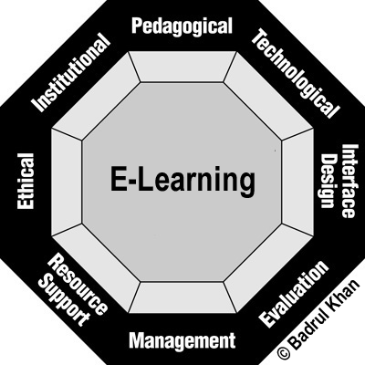

Ein pragmatischer Ansatz
- Ich wollte einen Beitrag zum globalen Wissen im Web leisten
- Ich wollte Theorie mit der Praxis verbinden
- Ich wollte nicht durch Dogmas eingeengt werden
- Der pragmatische Ansatz gibt Raum für Erkunden, Flexibilität und Entdeckung
Vier Ebenen für Blending Learning

Khans Oktagonales Framework für bedeutungsvolles E-Learning

Grafik von Badrul Khan